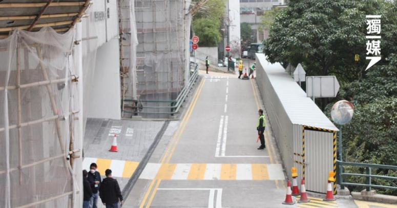
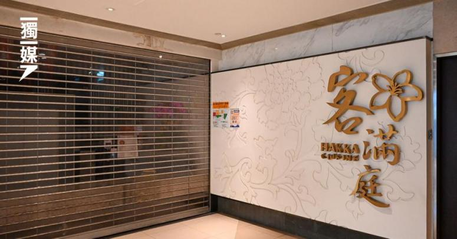

政治
經濟
生活
娛樂
KOL點評
愛國新聞
Hong Kong Metas
重點新聞
竹篙灣隔離無期 陰性結果無得走 有人崩潰出房哭喊「我要返去！」
檢疫設施爆棚，多人染疫仍需留在家中，但另一邊箱，多名身處竹篙灣的檢疫人士向《獨媒》投訴，隔離營內安排混亂，檢測陰性和沒有病徵的人出營無期，有人因此走出房外崩潰大哭大叫。此外，有母親獨自帶同4個月大的嬰兒入營，但全程沒有職員主動提供資訊或協助，嘆「成件事好癡線」。亦有人一直收不到快速檢測的結果，致電查詢才揭發當局失誤，一直沒收到其健康申報表，險因此無法出營。
2022年01月30日 10:49

食環署年宵取消 民間自辦北區市集
食環署取消各區年宵，不過有民間自發舉辦的市集，今年繼續舉行。在北區，搞手在燒烤場舉辦市集，稱望「為無法出國旅遊的香港人增添一點新年氣氛。」
2022年01月30日 10:49
調查指兒童飲食不均衡 營養師教路改阿媽煮餸方式
民社服務中心於昨日（1月29日）舉行《基層兒童營養情況》研究報告發佈會，調查246戶來自深水埗、油尖旺、九龍城等的基層兒童及青少年家庭，顯示九成基層兒童奶類攝取量不達標，並出現偏食情況，逾六成攝取過少蔬菜及水果。團體透過營養師介入，以教育等方式協助部分家庭改善問題，他們倡政府加強營養教育，包括「一對一營養師諮詢服務」、資助全港小學提供營養早餐等。
2022年01月30日 10:49
增120宗確診11宗源頭不明 2人帶Delta居新光中心、安達邨
今日新增120宗確診個案，其中11宗源頭不明，另有70宗初步確診。在11宗源頭不明個案中，2人含L452R，即Delta 病毒，分別居住在黃大仙新光中心、觀塘安達邨。
2022年01月30日 10:49
食環署年宵取消 民間自辦北區市集
食環署取消各區年宵，不過有民間自發舉辦的市集，今年繼續舉行。在北區，搞手在燒烤場舉辦市集，稱望「為無法出國旅遊的香港人增添一點新年氣氛。」
2022年01月30日 10:49
竹篙灣隔離無期 陰性結果無得走 有人崩潰出房哭喊「我要返去！」
檢疫設施爆棚，多人染疫仍需留在家中，但另一邊箱，多名身處竹篙灣的檢疫人士向《獨媒》投訴，隔離營內安排混亂，檢測陰性和沒有病徵的人出營無期，有人因此走出房外崩潰大哭大叫。此外，有母親獨自帶同4個月大的嬰兒入營，但全程沒有職員主動提供資訊或協助，嘆「成件事好癡線」。亦有人一直收不到快速檢測的結果，致電查詢才揭發當局失誤，一直沒收到其健康申報表，險因此無法出營。
2022年01月30日 10:49

前支聯會常委趙恩來刑滿出獄：做好自己、等待黎明
前支聯會常委及前荃灣區議員趙恩來被控前年六四在維園「煽惑他人明知而參與未經批准集結」和「明知而參與未經批准集結」，罪成被判入獄8個月。趙恩來今早完成服刑，步出白沙灣監獄，他清減了不少，籲港人保重，「雖然我哋宜家控制唔到自己嘅命運，但都希望大家可以堅持，喺唔同崗位做好自己，等待黎明到來。」
2022年01月30日 10:49
即時新聞
食環署年宵取消 民間自辦北區市集
2022年01月30日 10:49 1分鐘
客滿庭兩名不同枱食客染疫 防護中心：疑埋單時「相遇」
2022年01月30日 10:49 1分鐘
導盲犬因圍封冇得落樓 寄養家庭日行10層樓訓練
2022年01月30日 10:49 1分鐘
映葵樓解封 居民清晨衝閘趕返工 長者去茶樓「老人家就係要飲茶」
2022年01月30日 10:49 1分鐘
10.1黃大仙 11人暴動罪成 僅1人罪脫 官：案發如小戰場、急救員如軍隊救援兵
2022年01月30日 10:49 1分鐘
環保署稱空氣質素十年最佳 團體指2018年後減排放緩促推新措施
2022年01月30日 10:49 1分鐘
增115宗確診6宗源頭不明 帶Delta病毒老婦曾到彩雲商場
2022年01月30日 10:49 1分鐘
民建聯指勞福局無回應 去信內委會引「特權法」查童樂居
2022年01月30日 10:49 1分鐘
問會否送禮予竹篙灣檢疫人士 張竹君：我答唔到你
2022年01月30日 10:49 1分鐘
考評局取消DSE英文科口試 未打針可否考試仍待政府決定
2022年01月30日 10:49 1分鐘
「玻璃朱」涉醉駕被捕 無視「不准左轉」標誌兼撞傷途人
2022年01月30日 10:49 1分鐘
黃大仙新光中心延一小時解封 居民：堅持清零令人怨恨
2022年01月30日 10:49 1分鐘
黃大仙新光中心延一小時解封 居民：堅持清零令人怨恨
2022年01月30日 10:49 1分鐘
返回頂部
關於我們
|
贊助我們
|
加入我們
|
版權聲明
|
私隱聲明
|
免責條款
電郵:
info@hongkongmetas.com